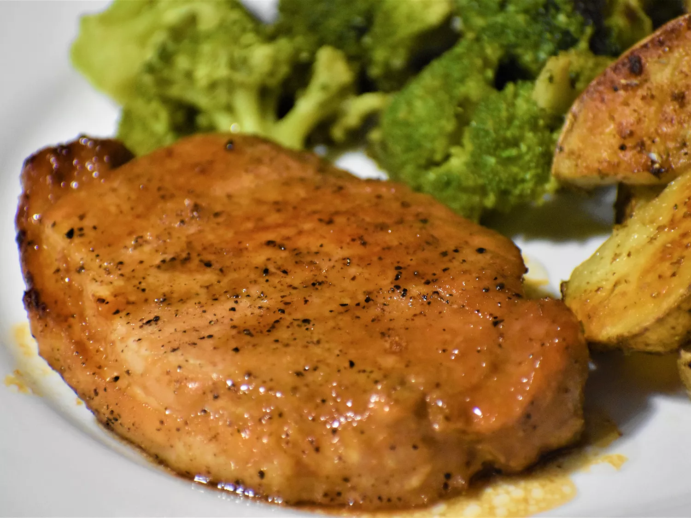

Pork Chop

Description:
A quick and simple grilled pork chop that everyone will love featuring a
simple and easy glaze made with ketchup, honey, soy sauce, and garlic.
Ingredients:
- 1/2 cup ketchup
- 2 2/3 tablespoons honey
- 2 tablespoons low-sodium soy sauce
- 2 cloves garlic, crushed
- 6 (4 ounce) (1-inch thick) pork chops
Steps:
-
Preheat grill for medium heat and lightly oil the grate. Gather ingredients.
-
Whisk ketchup, honey, soy sauce, and garlic together in a bowl to make a glaze.
-
Sear the pork chops on both sides on the preheated grill. Lightly brush
glaze onto each side of the chops as
they cook; grill until no longer pink in
the center, about 7 to 9 minutes per side. An instant-read thermometer
inserted into the center should read 145 degrees F (63 degrees C).
-
Serve hot and enjoy!